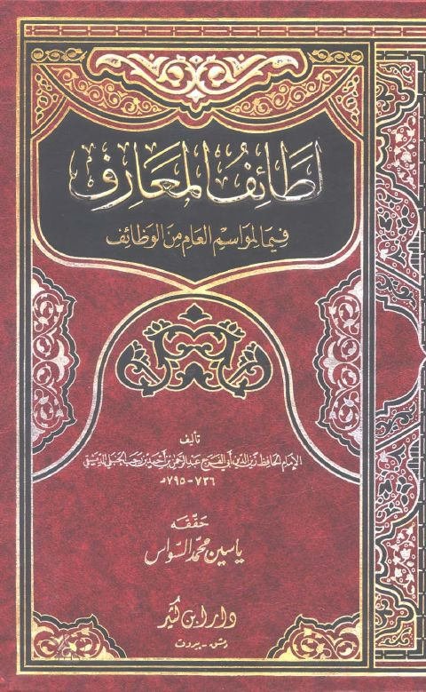
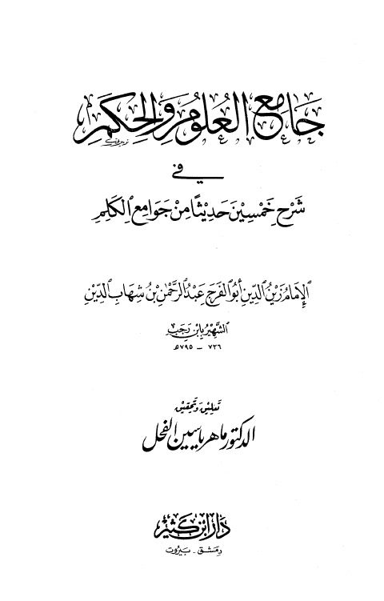
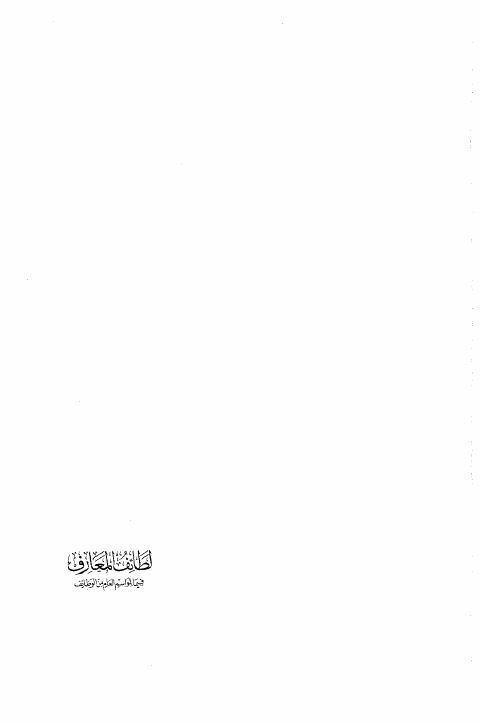
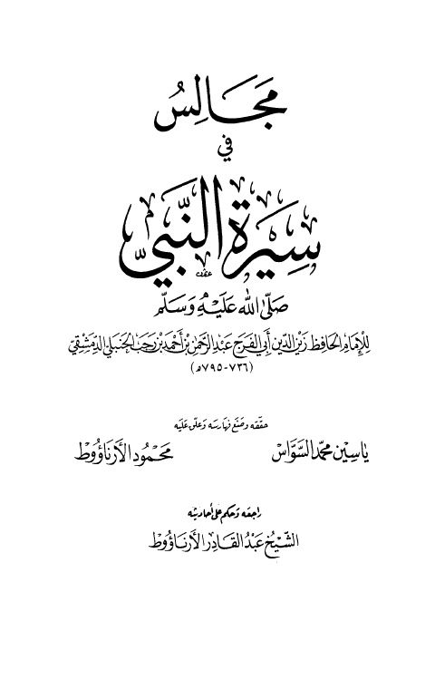

دار ابن كثير
Publisher
Resources

لطائف المعارف فيما لمواسم العام من الوظائف لطائف المعارف فيما لمواسم العام من الوظائف زين الدين أبو الفرج عبد الرحمن بن أحمد بن رجب الحنبلي الدمشقي رياض الصالحين- ت. ماهر الفحل
رياض الصالحين- ت. ماهر الفحل
يحيى بن شرف النووي
رياض الصالحين- ت. ماهر الفحل
رياض الصالحين- ت. ماهر الفحل
يحيى بن شرف النووي

جامع العلوم والحكم في شرح خمسين حديثًا من جوامع الكلم- دار ابن كثير جامع العلوم والحكم في شرح خمسين حديثًا من جوامع الكلم- دار ابن كثير عبد الرحمن البغدادي بن رجب الحنبلي
لطائف المعارف فيما لموإسم العام من الوظائف لطائف المعارف فيما لموإسم العام من الوظائف عبد الرحمن بن أحمد بن رجب الحنبلي الدمشقي
مجالس في سيرة النبي ﷺ مجالس في سيرة النبي ﷺ عبد الرحمن بن أحمد بن رجب الحنبلي